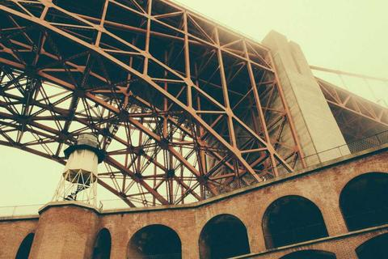
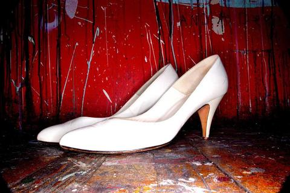

ARTnews · 今日 A New Hudson Valley Art Space Promises to Be As Accessible as It Is In Flux 来源：ARTnews 
ARTnews · 今日 Lucien Smith Cause of Death Announced, French Authorities Investigate Unauthorized Reproductions of Picasso… 来源：ARTnews
ARTnews · 今日 Carsten Höller's Spiraling Silver Slides Appear in Mexico City as a Permanent Installation 来源：ARTnews
ARTnews · 今日 Miami Beach Dealer Faces Another Lawsuit from Artist Alleging Non-Payment 来源：ARTnews 
ARTnews · 今日 Archaeologists Discover Large Assemblage of Ice Age Cave Art Hiding in Plain Sight 来源：ARTnews
ARTnews · 今日 Art Collector Barbara Jakobson's Famous Upper East Side Townhouse On the Market for $9 Million 来源：ARTnews
ARTnews · 今日 Andy Warhol’s ‘Camouflage’ Portraits Inspired Piaget’s New Limited-Edition Watch 来源：ARTnews
ARTnews · 今日 Rome’s Galleria Borghese’s $11.15 M. Extension Is Moving Forward Despite Pushback 来源：ARTnews
ARTnews · 今日 Federal Judge Temporarily Blocks Construction of Trump’s Arch, Hours After it Gains Final Approval 来源：ARTnews